WEST LAKE
In ancient times, West Lake was just a shallow sea gulf before it evolved into a residual lake. Today West Lake is like a shining pearl inlaid on the vast land of China, with 2 courses ways deviding the lake into 3 parts, with islands scattering in the lake, and lakes lying in the islands.
The legend has it that West Lake was a heavenly jewel fallen to earth.
- 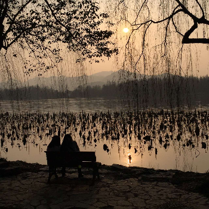
- 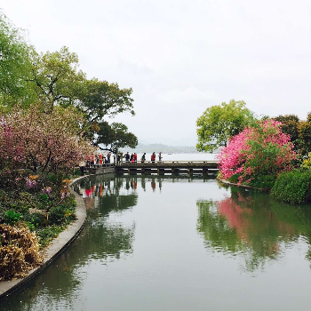
- 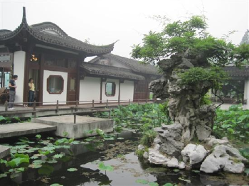
The Legend of White Snake
—
A Story
Once upon time there were a beautiful yong woman named "Madame White" and an evil old monk named "Monk Fa-Hai" living in Hangzhou. Prior to having transformed themselves into the human forms, the two used to be a white snake and a turtle practicing magic power at the bottom of West Lake.
Unfortunately the monk had been holding grudges against Madame White from their snake-turtle days. Once he learned that she had fallen in love with a young man — a real human being, got married and had a baby boy, Monk Fa-Hai decided to destroy her happy life. He eventually captured Madame White by performing evil power and kept her under Thunder Peak Pagoda.
There was a famous saying: “Only when the Thunder Peak Pagoda collapses, then Madame White will be freed.”
Click on the button to see what would happen!
GRAND CANAL
The Grand Canal is one of the greatest projects endeavored in ancient China as well as the longest man-made waterway in world. With its northernmost end in Beijing and the southernmost end in Habgzhou, the canal runs a total length of 1,794 kilometers, interconnecting the Yangtze, Yellow, Huai, Haihe, and Qiantang rivers.
- 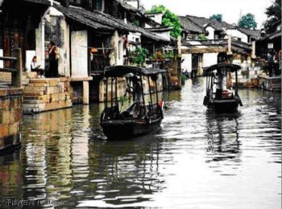
- 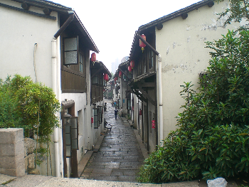
- 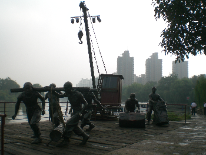
TEA PLANTATION
Dragon-Well green tea is one of China's most famous green teas, originating from Hangzhou. This tea has a very distinctive shape: smooth and perfectly flattened along the inside vein of the leaf, the result of highly skilled shaping in a hot wok. This process, known as pan-firing or pan-frying, gives the tea an inviting, toasty aroma. The super-high quality Dragon-Well green tea leaves are ususally processed by hands in hot woks.
- 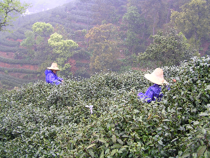
- 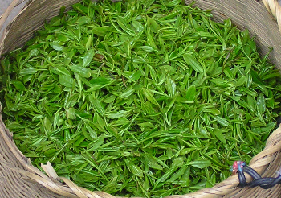
- 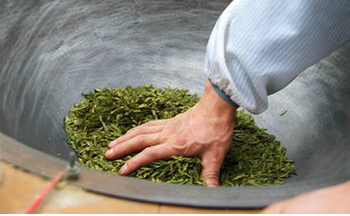
LOCAL CUISINES
Sweet & Sour West Lake Fish
Shrimps with Dragon-Well Green Tea Leaves
Beggar's Chicken
Aunt Song's Fish Soup
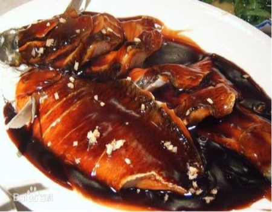
- 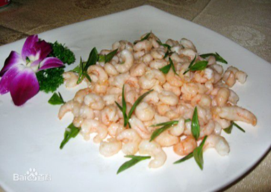
- 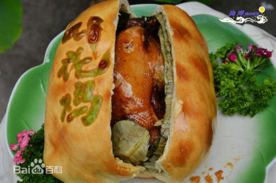